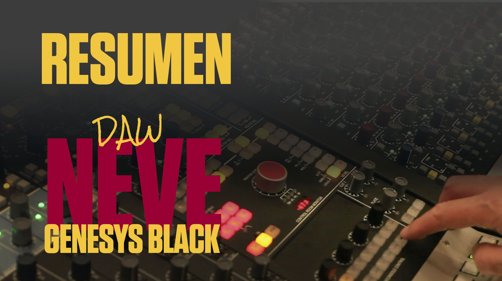

Technical Insights with Carlos Rodgarman
Delve into the world of professional audio with Carlos Rodgarman. Our video series offers an in-depth exploration of industry-leading audio equipment, including the Neve Genesys Black mixing console and esteemed microphones like the Telefunken U47. Whether you're an audio professional seeking expert insights or an enthusiast curious about the gear behind the sound, our technical video series with Carlos Rodgarman will walk you through every detail.
Neve Genesys Black
Complete Series Overview
- U1: EQ / DYN / INS1 / INS2
- U2: FILING
- U3: ORDER
- U4: RTE SEL
- U5: DAW CONTROL
- U6: BONUS TRACK

Neve Genesys Black
Featured Videos
Watch dedicated screencasts from our YouTube channel presenting all the new RG STUDIO features in detail and never miss a thing!